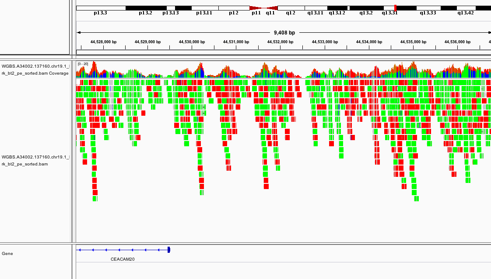
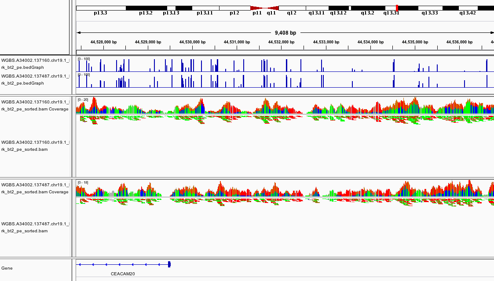

Module 4
Lab
1. Introduction
Description of the lab:
This module will cover the basics of Whole Genome Bisulfite-Sequencing (WGBS) data analysis including data visualization in IGV.
Objectives:
- Learn how to align WGBS data using
Bismark2) Learn how to generate a methylation profile withBismark3) Learn how to open alignments and methylation profiles in theIGVgenome browser 4) Learn how to perform a basic differential methylation analysis withMethylKit
Local software that we will use: Before you begin, make sure you have the following programs ready in your local computer:
- A connection to the
EPI_2021AWS instance - An internet browser
- IGV
- R (or RStudio), optional
2. Mapping Tutorial
2.1 Getting Started
Prepare Directory for the Lab
mkdir -p ~/workspace/module4
cd ~/workspace/module4Save Genome Location
GENOME=~/CourseData/EPI_data/module4/Homo_sapiens.GRCh38.chr19
export GENOMEThis will define a variable $GENOME that will simplify future commands.
Locate the Data for the Workshop
WGBS_DATA=~/CourseData/EPI_data/module4/data
export WGBS_DATAThis will define a variable $WGBS_DATA that will simplify future commands.
Check the Files Question 1
Type the following command: ls $WGBS_DATA, what do you see?
Answer
You should see something similar to this:
WGBS.A34002.137160.chr19.1.fastq.gz
WGBS.A34002.137160.chr19.2.fastq.gz
WGBS.A34002.137487.chr19.1.fastq.gz
WGBS.A34002.137487.chr19.2.fastq.gz
WGBS.A34002.137488.chr19.1.fastq.gz
WGBS.A34002.137488.chr19.2.fastq.gzThese are the files that will be used for the workshop. They contain a subset of WGBS reads from CEMT sample CEMT0007, which is a mammary gland epithelial cell line (more information here).
Question 2
What do the “.1” and “.2” in the file names mean?
Answer
They represent the read1 and read2 of the paired end reads.
2.2 Map Data using Bismark
We will now process and map the reads using the Bismark WGBS aligner (more info here).
Map the first dataset using Bismark
To simplify the work, we will process the datasets one at a time. To align the first dataset, do the following:
cd ~/workspace/module4
bismark --multicore 4 --bowtie2 $GENOME/genome/bismark_index \
-1 $WGBS_DATA/WGBS.A34002.137160.chr19.1.fastq.gz -2 $WGBS_DATA/WGBS.A34002.137160.chr19.2.fastq.gzQuestion 3
What do all the options in the command mean? (Hint check the help by using bismark --help)
Answer
- The
--multicore 4option is to do multithreaded processing to improve speed - The
--bowtie2option is to use the mapping algorithm from bowtie2 - The
$GENOME/genome/bismark_indexspecifies the location of the index for the reference genome to use. This uses the$GENOMEvariable we defined previously - The -1
$WGBS_DATA/WGBS.A34002.137160.chr19.1.fastq.gz specifiesthe location of read 1. Idem for-2which specifies read 2. This uses the$WGBS_DATAvariable we defined previously.
For more details, please refer to the Bismark user guide.
This step will take a few minutes to run for this reduced dataset. A dataset spanning a full genome will take several hours.
For your own datasets, make sure you have enough computing walltime to run the alignment.
While you wait for the results, ask any questions you have up to this point to the instructors.
Check files
At the end of the alignment, you should have the following files saved into your workshop folder:
WGBS.A34002.137160.chr19.1_bismark_bt2_pe.bam WGBS.A34002.137160.chr19.1_bismark_bt2_PE_report.txtLet’s look at the report:
less WGBS.A34002.137160.chr19.1_bismark_bt2_PE_report.txtQuestion 4
What was the mapping efficiency? What percent of C’s were methylated in CpG context?
Answer
According to the report:
...
Mapping efficiency: 92.4%
...
C methylated in CpG context: 57.4%
C methylated in CHG context: 0.6%
C methylated in CHH context: 0.5%
C methylated in unknown context (CN or CHN): 3.5%
...Close the report by pressing q.
Prepare files for loading in IGV
We need to sort the bam file and prepare an index so we will be able to load it in IGV. We will use the program samtools for this.
samtools sort WGBS.A34002.137160.chr19.1_bismark_bt2_pe.bam -o WGBS.A34002.137160.chr19.1_bismark_bt2_pe_sorted.bam
samtools index WGBS.A34002.137160.chr19.1_bismark_bt2_pe_sorted.bamCheck Files
At the end, you should have the following files:
WGBS.A34002.137160.chr19.1_bismark_bt2_pe_sorted.bam
WGBS.A34002.137160.chr19.1_bismark_bt2_pe.bam
WGBS.A34002.137160.chr19.1_bismark_bt2_pe_sorted.bam.bai
WGBS.A34002.137160.chr19.1_bismark_bt2_PE_report.txt2.3 Repeat Alignment for All Datasets
Question 5
How would you repeat the alignment with the other datasets?
Answer
This is the command to run bismark on the two other samples:
cd ~/workspace/module4
bismark --multicore 4 --bowtie2 $GENOME/genome/bismark_index \
-1 $WGBS_DATA/WGBS.A34002.137487.chr19.1.fastq.gz -2 $WGBS_DATA/WGBS.A34002.137487.chr19.2.fastq.gz
bismark --multicore 4 --bowtie2 $GENOME/genome/bismark_index \
-1 $WGBS_DATA/WGBS.A34002.137488.chr19.1.fastq.gz -2 $WGBS_DATA/WGBS.A34002.137488.chr19.2.fastq.gzRemember, for the command to work, both $GENOME and $WGBS_DATA need to be defined.
This is the command to prepare the samples for IGV (sort and index):
samtools sort WGBS.A34002.137487.chr19.1_bismark_bt2_pe.bam -o WGBS.A34002.137487.chr19.1_bismark_bt2_pe_sorted.bam
samtools index WGBS.A34002.137487.chr19.1_bismark_bt2_pe_sorted.bam
samtools sort WGBS.A34002.137488.chr19.1_bismark_bt2_pe.bam -o WGBS.A34002.137488.chr19.1_bismark_bt2_pe_sorted.bam
samtools index WGBS.A34002.137488.chr19.1_bismark_bt2_pe_sorted.bam2.4 Load Data and Explore using IGV
While you wait for the previous steps to finish executing, it is a good idea to begin exploring the alignments.
Copy Files to Your Local Computer to View in IGV (optional)
Retrieve the files called WGBS.A34002.137160.chr19.1_bismark_bt2_pe_sorted.bam and WGBS.A34002.137160.chr19.1_bismark_bt2_pe_sorted.bam.bai from the server using your internet browser and the public IP address of your AWS instance.
Launch IGV on your computer
If you haven’t installed it yet, please get it here IGV download.
Make sure that the human genome is selected in the top left corner. It should read: Human (hg38).
Load your sorted bam file in IGV using File -> Load from file. For this to work, you need to have the index file (.bai) in the same location as the bam file. You can also load this directly from the internet using the URL of this file you got from your public IP page, using File -> Load from URL.
Now, on IGV, go to the following location:
chr19:43,375,889-45,912,052And zoom in until you see something.
For instance, try the following window:
chr19:44,527,387-44,536,873You should see something like this:

If it looks different, can you change the way the colors are displayed?
Which section of which chromosome is covered by this dataset?
Can you see any interesting patterns in the coverage?
2.5 Generate Methylation Profiles
So far we have only mapped the reads using Bismark. We can generate methylation profiles using the following command:
cd ~/workspace/module4
bismark_methylation_extractor --bedGraph WGBS.A34002.137160.chr19.1_bismark_bt2_pe.bamQuestion 6
How would you do the same for the other replicates?
Answer
These are the commands that you should use:
cd ~/workspace/module4
bismark_methylation_extractor --bedGraph WGBS.A34002.137487.chr19.1_bismark_bt2_pe.bam
bismark_methylation_extractor --bedGraph WGBS.A34002.137488.chr19.1_bismark_bt2_pe.bamMake sure that all the files produced so far are displayed in your internet browser.
While you wait for all the steps to finish, you can ask the instructors any questions you might have up until this point.
Load all the files in IGV using File -> Load from file or File -> Load from URL.
At this point, if you load the region chr19:44,527,387-44,536,873 you should see something like

This promoter looks to be hypomethylated.
Can you find a promoter that is hypermethylated?
How about chr19:45,637,715-45,657,380?
How would you look for a CpG island using this view of the data?
Keep exploring the files and see if you can find differences in the methylation profiles of the samples.
3. Differential Methylation Analysis in MethylKit
The following section will use the Bioconductor package methylKit to do a differential methylation analysis. You can do it in your own computer (if you have installed R and methylKit) or in the AWS instance.
To install methylKit locally on your computer, make sure you have a recent version of R and follow the instructions in this page.
3.1 Load R and MethylKit
If you are working in AWS, you will need to load R. The image we provide already has the libraries we need.
To launch R simply type the following to your terminal:
cd ~/workspace/module4
RIf you did this properly, the following message will be displayed and your prompt will change from ubuntu@ip-00-00-00-0:~/workspace/module4$ to >:
R version 4.0.5 (2021-03-31) -- "Shake and Throw"
Copyright (C) 2021 The R Foundation for Statistical Computing
Platform: x86_64-pc-linux-gnu (64-bit)
...Once you have successfully launched R, you can load methylKit with the following command:
library("methylKit") 3.2 Import the Alignment Data into MethylKit
Process Bismark Alignments
To read the alignment data into methylKit, run the following command:
methRaw.160 = processBismarkAln( location = "WGBS.A34002.137160.chr19.1_bismark_bt2_pe_sorted.bam",
sample.id="A34002.137160", assembly="hg38",
read.context="CpG", save.folder="methylkit")This command will import the data into a format that is readable by methylKit. At the same time, it will save two files under the methylkit directory with the information so that it is easy to load again at any time:
methylkit/A34002.137160_CpG_conversionStats.txt
methylkit/A34002.137160_CpG.txtIf everything goes well and you see the files, do the same for the other two samples:
methRaw.487 = processBismarkAln( location = "WGBS.A34002.137487.chr19.1_bismark_bt2_pe_sorted.bam",
sample.id="A34002.137487", assembly="hg38",
read.context="CpG", save.folder="methylkit")
methRaw.488 = processBismarkAln( location = "WGBS.A34002.137488.chr19.1_bismark_bt2_pe_sorted.bam",
sample.id="A34002.137488", assembly="hg38",
read.context="CpG", save.folder="methylkit")Create a MethylKit Object
Now that all the samples have been read with methylKit, you can create a file list to make it easier to load the full dataset as a methylkit object. For the purposes of this tutorial, we will consider that samples belong to two experimental groups: A34002.137160 as the control group (treatment = 0) and A34002.137487 & A34002.137488 as the treatment group (treatment = 1). We use the methRead() function to create our object, as shown below:
file.list = list( file.path("methylkit", "A34002.137160_CpG.txt"),
file.path("methylkit", "A34002.137487_CpG.txt"),
file.path("methylkit", "A34002.137488_CpG.txt") )
myobj = methRead(file.list,
sample.id=list("A34002.137160","A34002.137487","A34002.137488"),
assembly="hg38",
treatment=c(0,1,1),
context="CpG",
mincov = 10
)Question 7
What do all the options in the methRead() command mean?
Answer
file.listobject points to the location of the input data in a MethylKit format.sample.idpoints to a list with the appropriate sample name for each file.assemblyspecifies which build of the human reference genome is used.treatmentspecifies which sample belongs to each experimental group.contextspecifies the methylation context.mincovspecifies the minimum coverage required to be included in the object.
For more details, please refer to the MethylKit user guide.
If the files were loaded properly, you can check the object you just created by running the following command:
myobjWhich should output the following message followed by previews of the contents of the object:
methylRawList object with 3 methylRaw objects
...You can also get basic statistics on your object by using the following command:
getMethylationStats(myobj[[2]],plot=FALSE,both.strands=FALSE)3.3 Find Differentially Methylated Regions
Merge Samples
Before doing any additional analysis, methylKit needs to determine which methylated bases have sufficient coverage in all samples so they can be compared. To do that, the samples should be merged with the unite() function. This function has a parameter destrand= that is turned off by default. We will set the destrand option to TRUE which will merge the coverage of both strands. When doing your own analyses, be aware that for some kinds of methylation analyses (such as CpH methylation) results are strand-specific, so this option should be used carefully.
meth = unite(myobj, destrand=TRUE)Perform Differential Methylation Analysis
The standard function for Differential Methylation Analysis on methylKit is calculateDiffMeth(). It takes any merged methylkit object as input. Depending on the number of replicates, it uses either Fisher’s exact or logistic regression to calculate P-values. It also, automatically produces Q-values, which are a kind of adjusted P-value. To use it with the results we obtained before, run the following command:
myDiff = calculateDiffMeth(meth)To check the output, just type myDiff and read the summary. If you want an example of the output, check the solution below.
Example
This is what the output looks like:
methylDiff object with 2941 rows
--------------
chr start end strand pvalue qvalue meth.diff
1 chr19 42002896 42002896 + 3.271268e-01 0.69569299 8.951407
2 chr19 42002978 42002978 + 1.912989e-01 0.60732656 -21.666667
3 chr19 42007251 42007251 + 6.999764e-05 0.03228847 -55.681818
4 chr19 42007255 42007255 + 3.958578e-01 0.75196047 -11.835106
5 chr19 42007283 42007283 + 8.451850e-01 0.91347038 -2.457757
6 chr19 42007314 42007314 + 9.102723e-01 0.92865750 -1.604278
--------------
sample.ids: A34002.137160 A34002.137487 A34002.137488
destranded TRUE
assembly: hg38
context: CpG
treament: 0 1 1
resolution: base To filter results by their statistical significance, methylKit provides the getMethylDiff() function which allows you to extract only the deferentially methylated CpG’s that meet a specific Q-value threshold. Additionally, it is also possible to specify whether to keep hypo or hyper methylated CpG’s only. Finally, the bedgraph() function allows you to save the the methylDiff object into a BedGraph file so you can open it with your genome browser of choice. Let’s create two BedGraph files with hypo and hyper methylated CpG’s with a Q-value below 0.05 based on the data above:
myDiff.hyper = getMethylDiff(myDiff,qvalue=0.05,difference=10,type="hyper")
bedgraph(myDiff.hyper, file.name = "hyper.CpG.bedGraph", col.name = "qvalue")
myDiff.hypo = getMethylDiff(myDiff,qvalue=0.05,difference=10,type="hypo")
bedgraph(myDiff.hypo, file.name = "hypo.CpG.bedGraph", col.name = "qvalue")Two new files should appear now in your workshop folder:
~/workspace/module4/hyper.CpG.bedGraph
~/workspace/module4/hypo.CpG.bedGraphBin Results to Obtain Differentially Methylated Regions
By default, methylKit will compute results with an individual CpG resolution. To get Differentially Methylated Regions (DMR), you have to bin your results first, using a window size of your choice. The function to do this is tileMethylCounts(), which takes a regular methylkit object as input. In this case, we will create 1000bp bins using the following command:
tiles = tileMethylCounts(myobj,win.size=1000,step.size=1000,cov.bases = 10)As with CpG level results, samples need to be merged before the analysis can continue:
meth.tiles = unite(tiles, destrand=TRUE) Now, we will use the calculateDiffMeth() and getMethylDiff() functions to get the DMRs.
Questions 8 & 9
Do you know how to do it, based on the information above?
Based on the number of differentially methylated CpGs you found above, do you anticipate many statistically significant DMRs in your analysis?
Answer
Use the following commands to perform a DMR analysis:
myDiff.tiles = calculateDiffMeth(meth.tiles)
myDiff.tiles.hyper = getMethylDiff(myDiff.tiles,qvalue=0.1,difference=10,type="hyper")
bedgraph(myDiff.tiles.hyper, file.name = "hyper.DMR.bedGraph", col.name = "qvalue")
myDiff.tiles.hypo = getMethylDiff(myDiff.tiles,qvalue=0.1,difference=10,type="hypo")
bedgraph(myDiff.tiles.hypo, file.name = "hypo.DMR.bedGraph", col.name = "qvalue")Using the navigation pane, download the bedGraph files you just produced and try to open them with IGV.
Do the statistical results match what you had seen before when exploring the data?
What interesting genomic features are found close to the DMRs? What could this mean?
Congrats, you’re done!
You can quit R using the quit() or q() command. Remember to stop your AWS instance after this lab to avoid unnecessary costs.
Once you are finished make sure you download all the files you need and continue exploring on IGV.
Lab Completed!
Congratulations! You have completed Lab 4!